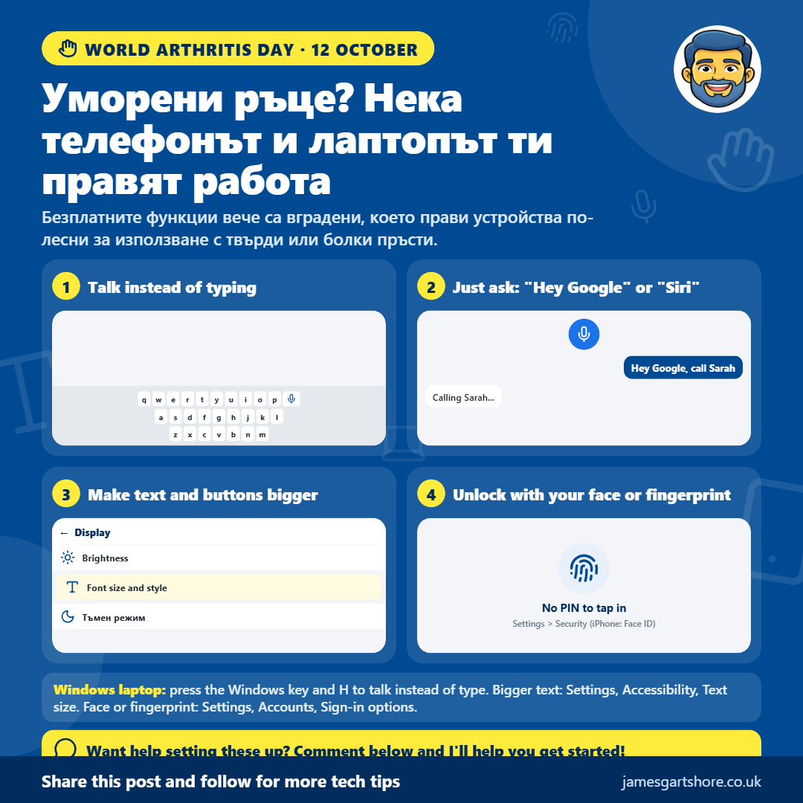
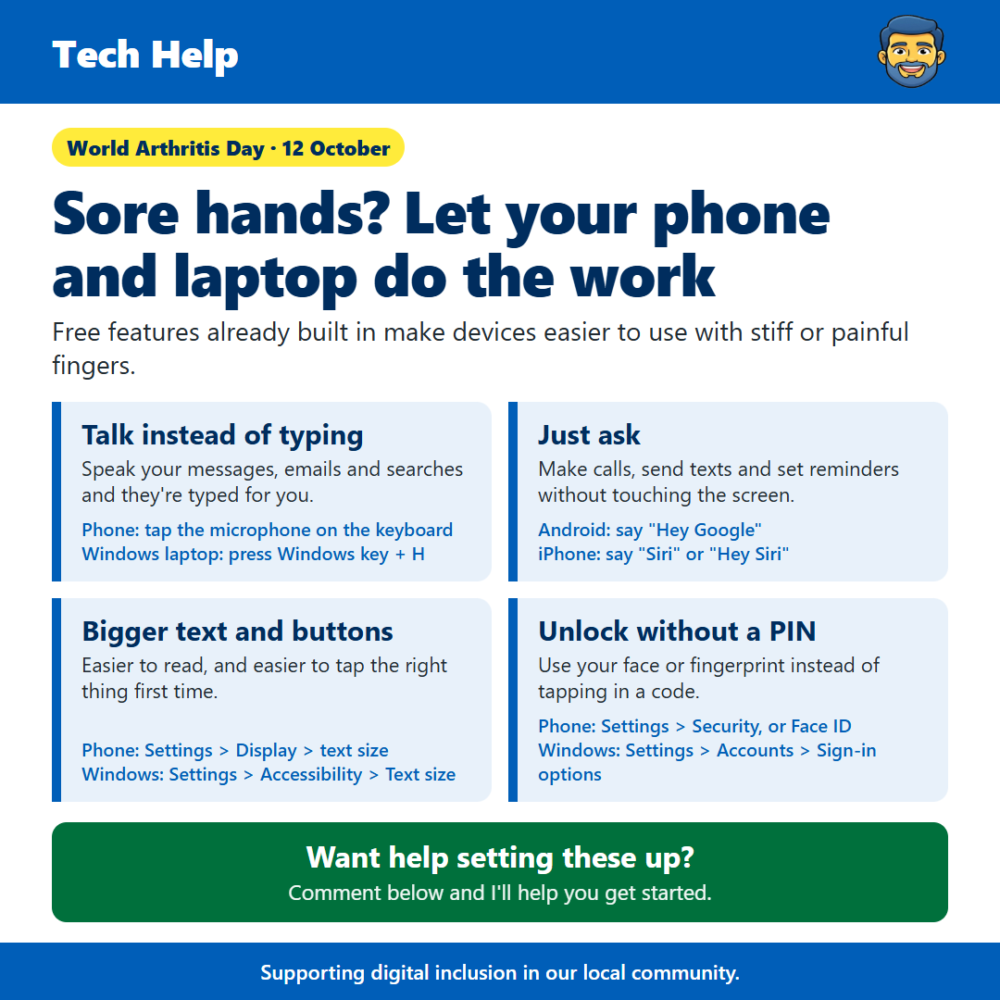

Arthritis Day
От James Gartshore · · Здраве и благополучие
See the old version of this poster

Download the old versionЗдравейте всички, днес е Всемирния ден на артрита, така че исках да споделя някои функции на вашия телефон и лаптоп, които могат да направят живота много по-лесен, ако имате болки, твърди или болки в ръцете.
Писането на малък екран може да е много неудобно, но не е нужно. Говоренето за текст позволява на вас да говорите съобщенията си, имейлите и търсения, а телефонът ви ги въвежда. На телефона си, просто натиснете малкия микрофон на клавиатурата и започнете да говорите. На Windows лаптоп, натиснете заедно клавиша Windows и H, и това работи в почти всяка програма.
Можете също да позволявате на телефона си да прави неща за вас без да докосвате екрана. На Android телефон, кажете "Hey Google", а на iPhone, кажете "Siri" или "Hey Siri", последвано това, което искате, като например "позвони на Сара", "изпрати съобщение на Джон" или "напомни ми да взема таблетите си в 18:00". Ако не отговори, може да е необходимо първо да го включите в настройките на телефона си.
Правилото на увеличаване на текста и бутоните също може да помогне, защото е по-лесно да четете и много по-лесно да натиснете нещата правилно от първи път. На телефона си, отидете в Настройки, след това Екран и потърсете опцията за размер на текста или шрифта. На Windows лаптоп, отидете в Настройки, след това Удобство, след това Размер на текста.
Ако натискането на ПИН или парола е трудно, можете да отключите телефона си с лицето или пръста. Ще намерите това в Настройките на телефона си под Сигурност, или Face ID на iPhone. Много по-новите лаптопи с Windows могат да правят същото, което можете да настроите в Настройките, след това в Устройства, след това в опции за вход.
Всички те са безплатни и вече са вградени в вашите устройства, така че няма нищо допълнително да купувате или свалите.
Ако искате помощ за настройка някой от тези неща, просто изпратете ми съобщение и ще направя всичко възможно да ви помогна.
Надявам се това да помогне и не се колебайте да го препратите на всеки, който може да му е полезно.